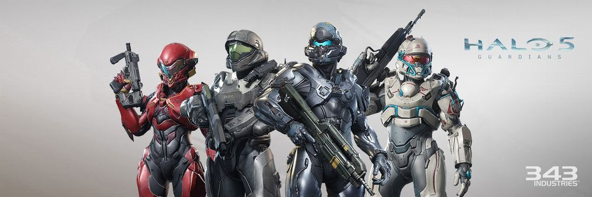

ONI의 수장 마가렛 올렌다 파란고스키 대장의 주도 하에 시작이 되었다. 스파르탄-III 생존자인 준-A266이 컨설던트로 후보 인원들을 설득하기 위해 바쁘게 움직였다. 스파르탄 IV 프로젝트는 이전 시리즈와 달리, 초기 오리온 프로젝트처럼 성인 지원자를 받았기 때문에, 어린아이들에게 아동학대에 가까운 군사 훈련을 시킬 필요가 없어져 양성 과정도 더 빨라졌고, 윤리적인 문제도 없다. 스파르탄이란 병과가 공식적으로 생겼기 때문에, 이전 세대들의 스파르탄들도 희망 시 스파르탄-IV에 배속될 수 있다.
기술적 진보를 이뤘지만, 이들의 신체 강화 시술은 성인을 대상으로 한 시술이라 ,기술적 진보에도 불구하고 신체 능력이 이전 II,III 세대들처럼 초월적인 수준으로 강해지지는 못했다. 물론 이들의 신체 능력도 일반 인간보단 확실히 강하지만, 이전 세대 스파르탄 II,III 들보다는 상당히 떨어진다. 하지만 그 차이를 메꾸기 위해 설계된 2세대 묠니르 전투복 덕분에, 실질적으로 큰 문제는 없는 셈이다.